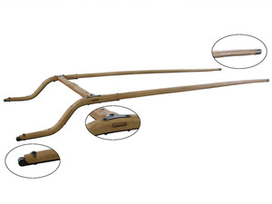
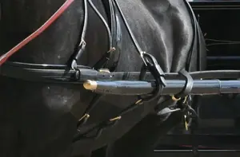
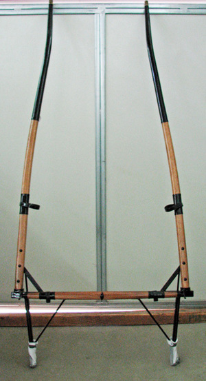

ⲣⲙϩⲛⲉϩ S nn m, pole, shaft of cart: Glos 115 ῥυμός · ⲡⲣ.



ⲣⲙϩⲛⲉϩ S nn m, pole, shaft of cart: Glos 115 ῥυμός · ⲡⲣ.
| view | ϩⲁ, ϩⲟ, ϩⲁⲉ S | (noun masculine) pole, mast, weaver's beam [αντιον]2096 |
| view | ⲟⲩⲱϩ SALBF ⲟⲩϩⲱ A ⲟⲩⲟϩ, ⲟⲩⲁϩ B ⲟⲩⲉϩ- SB ⲟⲩⲱϩ- SAF ⲟⲩⲁϩ- ABFO ⲃⲁϩ- B ⲟⲩⲁϩ⸗ SALBF ⲟⲩϩⲁ⸗ A ⲟⲩⲉϩ⸗ F ⲟⲩⲏϩ† SAL ⲟⲩⲏⲏϩ† S ⲟⲩϩⲏ† A ⲟⲩⲉϩ† BF p c ⲟⲩⲁϩ- S imperative: ⲁⲩⲱ S imperative: ⲁⲟⲩ {for ⲁⲟⲩⲱϩ} A imperative: ⲟⲩⲟϩ B | (verb) put, set, be (there)
― intr: S,B,F ― tr: [επιτιθεναι] intr: be placed, dwell [κατοικειν, κατασκηνουν, μενειν]34 |
| view | ⲙⲉⲣⲉϩ SB ⲙⲉⲣϩ S ⲙⲉⲣⲏϩ A | (noun masculine) spear, javelin [δορυ]1105 |
| view | ⲕⲁϣ SB ⲕⲉϣ AF ⲕⲉϣ- B | (noun masculine/feminine) reed [καλαμος, καλαμη]
― as stalk ― as pen ― as shin-bone ― as staff to lean on ― as plough-pole ― as stem (of candelabra) ― as paling as adj891 |